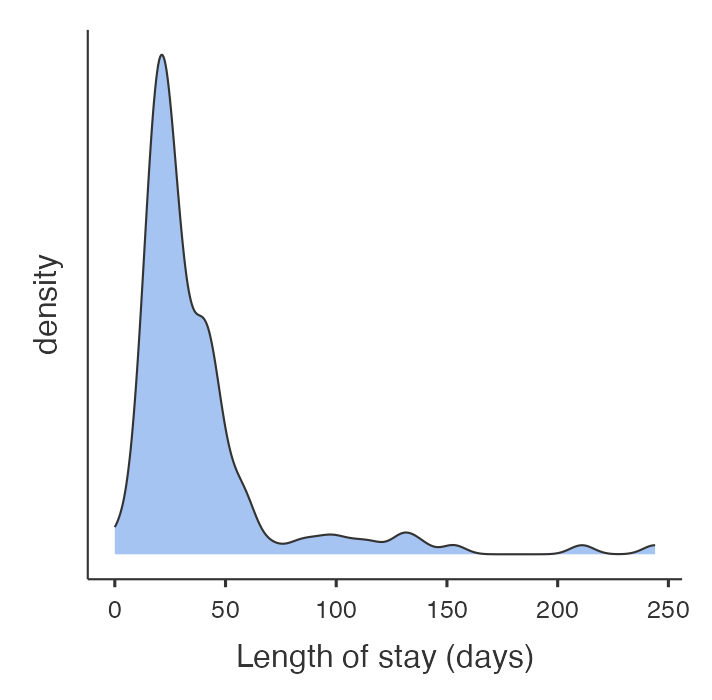
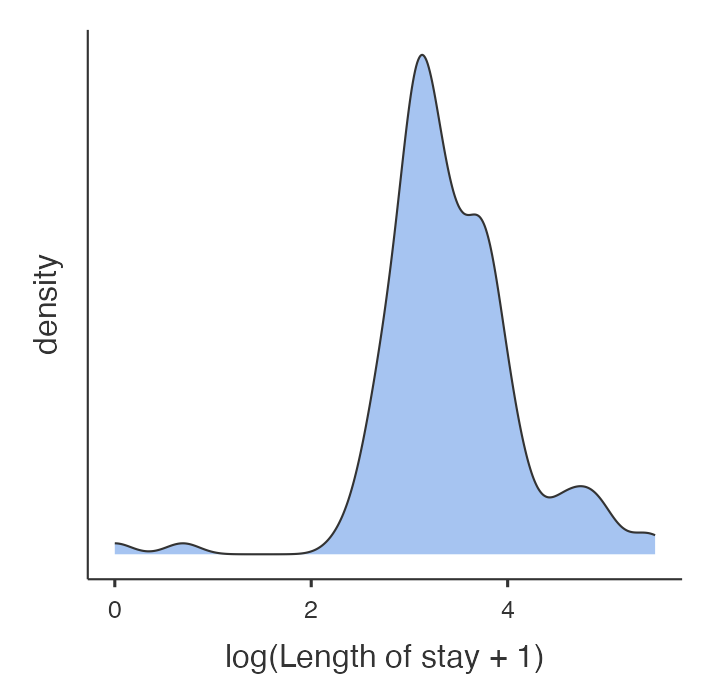
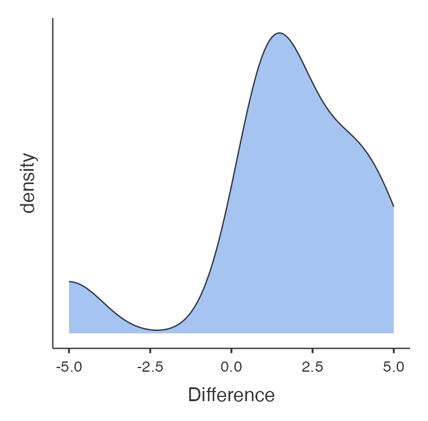
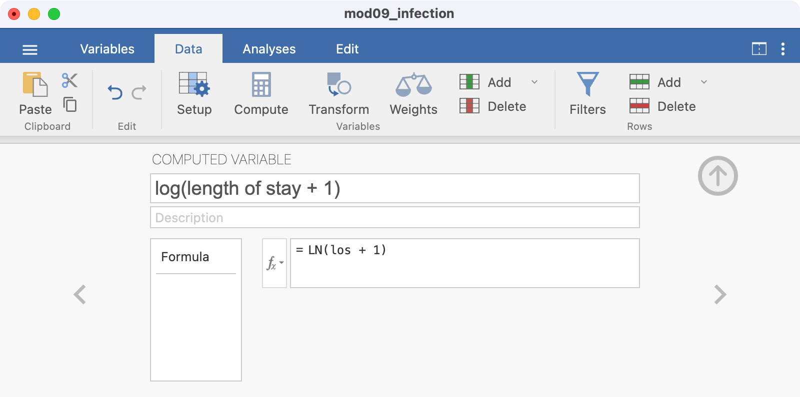
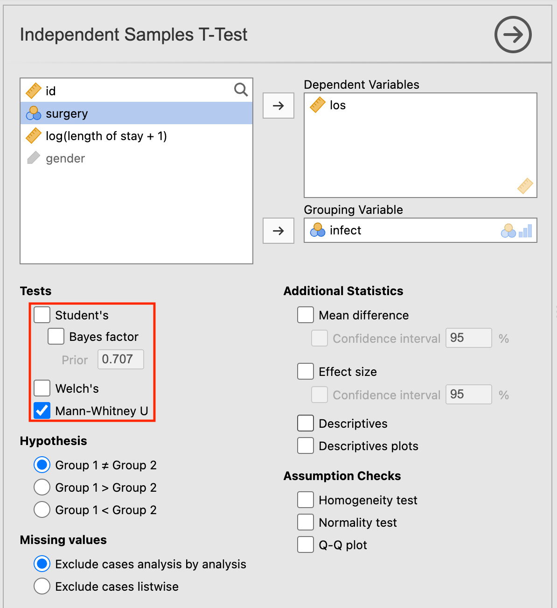
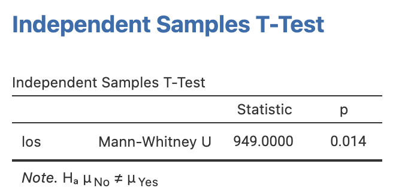
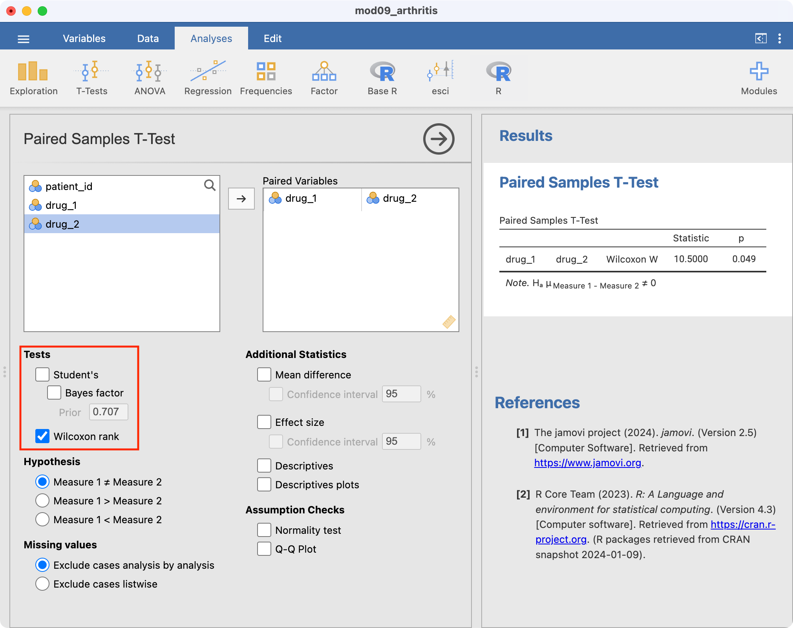
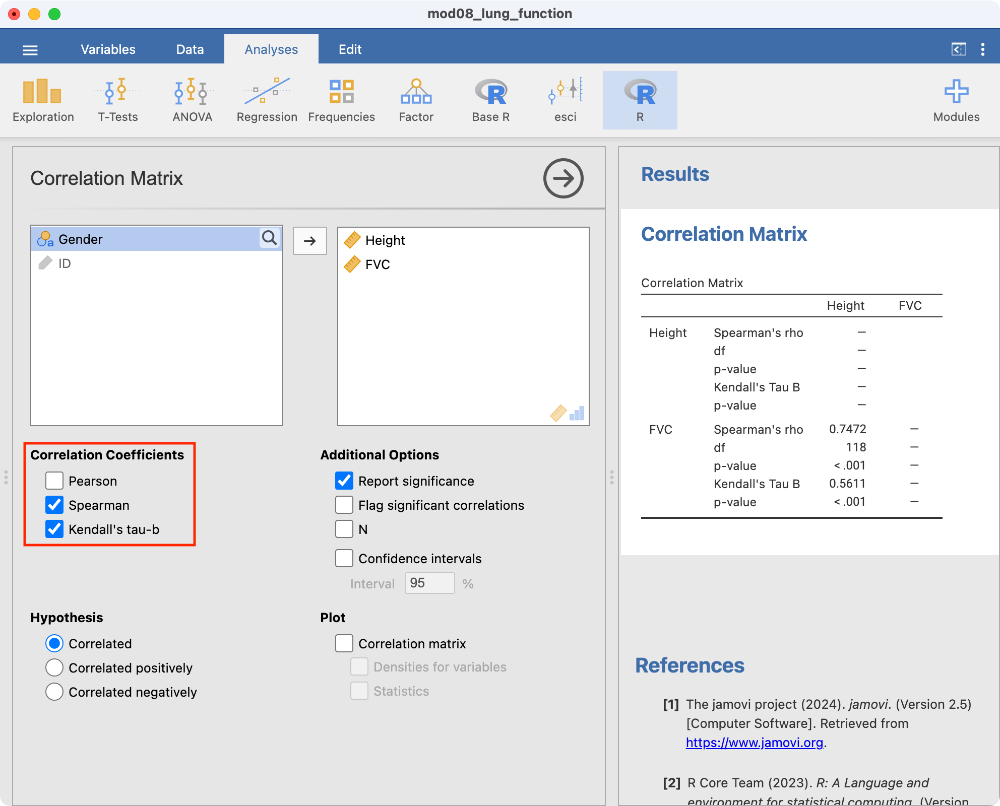

Learning objectives
By the end of this module you will be able to:
- Transform non-normally distributed variables;
- Explain the purpose of non-parametric statistics and key principles for their use;
- Calculate ranks for variables;
- Conduct and interpret a non-parametric independent samples significance test;
- Conduct and interpret a non-parametric paired samples significance test;
- Calculate and interpret the Spearman rank correlation coefficient.
Optional readings
Kirkwood and Sterne (2001); Chapter 13. [UNSW Library Link]
Bland (2015); Chapter 12. [UNSW Library Link]
9.1 Introduction
In general, parametric statistics are preferred for reporting data because the summary statistics (mean, standard deviation, standard error of the mean etc) and the tests used (t-tests, correlation, regression etc) are familiar and the results are easy to communicate. However, non-parametric tests can be used if data are not normally distributed. Non-parametric tests make fewer assumptions about the distribution of the data.
9.2 Transforming non-normally distributed variables
When a variable has a skewed distribution, one possibility is to transform the data to a new variable to try and obtain a normal or near normal distribution. Methods to transform non-normally distributed data include logarithmic transformation of each data point, or using the square root or the square or the inverse (i.e. 1/x) etc.
Worked Example
We have data from 132 patients who had a hospital stay following admission to ICU (mod09_infection.rds). The distribution of the length of stay for these patients is shown in the density plot in Figure 9.1. As is common with variables that record time, the data are skewed with many patients having relatively short stays and a few patients having very long hospital stays. Clearly, it would be inappropriate to use parametric statistical methods for these data.
When data are positively skewed, as shown in Figure 9.1, a logarithmic transformation can often make the data closer to being normally distributed. This is the most common transformation used. You should note, however, that the logarithmic function cannot handle 0 or negative values. One way to deal with zeros in a set of data is to add 1 to each value before taking the logarithm.
We would generate a new variable, as shown in the jamovi or R notes. As the minimum length of stay in these sample data was 0, we have added 1 to each length of stay before taking the logarithm. The distribution of the logarithm of (length of stay + 1) is shown in Figure 9.2.

The distribution now appears much more bell shaped. Table 9.1 shows the descriptive statistics for length of stay before and after logarithmic transformation. Before transformation, the SD is almost as large as the mean value which indicates that the data are skewed and that these statistics are not an accurate description of the centre and spread of the data.
| Length of stay | log(Length of stay + 1) | |
|---|---|---|
| Mean (Standard deviation) | 38.1 (35.78) | 3.41 (0.715) |
| Mean: 95% confidence interval | 31.9 to 44.2 | 3.29 to 3.53 |
| Median [Interquartile range] | 27 [21 to 42] | 3.3 [3.1 to 3.8] |
| Range | 0 to 244 | 0 to 5.5 |
The mean and standard deviation of the transformed length of stay are in log base e (i.e. ln) units. If we raise the mean of the log of length of stay to the power of \(e\), it returns a value of 30.2 days (\(e^{3.41}=30.2\)).
Technically, this is called the geometric mean of the data, and it has a different interpretation to the usual mean, the arithmetic mean. This is a much better estimate in this case of the “average” length of stay than the mean of 38.1 days (95% CI 31.9, 44.2 days) obtained from the non-transformed positively skewed data. Note that, if you have added 1 to your data to deal with 0 values, the back-transformed estimate is approximately equal to the geometric mean.
This set of data also includes a variable summarising whether a patient acquired a nosocomial infection (also known as healthcare-associated infections), which are infections that develop while undergoing medical treatment but were absent at the time of admission.
If we were testing the hypothesis that there was a difference in length of stay between groups (status of nosocomial infection), t-tests should not be used with length of stay, but could be used for the log transformed variable, which is approximately normally distributed. The output from the t-test of the log-transformed length of stay is shown in Table 9.2. This is done using the t-test shown in Module 5.
| Nosocomial infection | n | Mean (SE) | 95% Confidence interval |
|---|---|---|---|
| No | 106 | 3.33 (0.068) | 3.19 to 3.46 |
| Yes | 26 | 3.73 (0.136) | 3.45 to 4.01 |
| Difference (Yes - No) | 0.39 (0.153) | 0.09 to 0.70 |
Here, a two-sample t-test gives a test statistic of -2.61 with 38.5 degrees of freedom, and a P-value of 0.01.
As explained above, the estimated statistics would need to be converted back to the units in which the variable was measured. From Table 9.2, we can take the exponential of the corresponding log-transformed values:
- the geometric mean of the infected group is approximately 41.5 days with a 95% confidence interval from 31.4 to 55.0 days.
- the geometric mean of the uninfected group is approximately 27.9 days with a 95% confidence interval from 24.4 to 31.9 days.
9.3 Non-parametric significance tests
It is often not possible or sensible to transform a non-normal distribution, for example if there are too many zero values or when we simply want to compare groups using the unit in which the measurement was taken (e.g. length of stay). For this, non-parametric significance tests can be used but the general idea behind these tests is that the data values are replaced by ranks. This also protects against outliers having too much influence.
Ranking variables
Table 9.3 shows how ranks are calculated for the first 21 patients in the length-of-stay data. First the data are sorted in order of their magnitude (from the lowest value to the highest) ignoring the group variable. Each data point is then assigned a rank. Data points that are equal are assigned the mean of their ranks. Thus, the two lengths of stay of 11 days share the ranks 4 and 5, and have a mean rank of 4.5. Similarly, there are 5 people with a length of stay of 14 days and these share the ranks 9 to 13, the mean of which is 11. Once ranks are computed they are assigned to each of the two groups and summed within each group.
| ID | Infection | Length of stay | Rank | Infection=no | Infection=Yes |
|---|---|---|---|---|---|
| 32 | No | 0 | 1.0 | 1.0 | |
| 33 | No | 1 | 2.0 | 2.0 | |
| 12 | No | 9 | 3.0 | 3.0 | |
| 22 | No | 11 | 4.5 | 4.5 | |
| 16 | No | 11 | 4.5 | 4.5 | |
| 28 | Yes | 12 | 6.0 | 6.0 | |
| 27 | No | 13 | 7.5 | 7.5 | |
| 20 | No | 13 | 7.5 | 7.5 | |
| 24 | No | 14 | 11.0 | 11.0 | |
| 11 | No | 14 | 11.0 | 11.0 | |
| 130 | No | 14 | 11.0 | 11.0 | |
| 10 | No | 14 | 11.0 | 11.0 | |
| 25 | No | 14 | 11.0 | 11.0 | |
| 19 | No | 15 | 15.5 | 15.5 | |
| 30 | No | 15 | 15.5 | 15.5 | |
| 23 | No | 15 | 15.5 | 15.5 | |
| 14 | No | 15 | 15.5 | 15.5 | |
| 15 | No | 17 | 20.5 | 20.5 | |
| 13 | No | 17 | 20.5 | 20.5 | |
| 21 | Yes | 17 | 20.5 | 20.5 | |
| 17 | No | 17 | 20.5 | 20.5 |
By assigning ranks to individuals, we lose information about their actual values and this makes it more difficult to detect a difference. However, outliers and extreme values in the data are brought back closer to the data so that they are less influential. For this reason, non-parametric tests have less power than parametric tests and they require much larger differences in the data to show statistical significance between groups.
9.4 Non-parametric test for two independent samples (Wilcoxon ranked sum test)
The non-parametric equivalent to an independent samples t-test (Module 5) is the Wilcoxon ranked sum test, also known as the Mann-Whitney U test. This can be obtained using the Mann-Whitney U option in jamovi, and the wilcox.test in R.
The assumption for this test is that the distributions of the two populations have the same general shape. If this assumption is met, then this test evaluates the null hypothesis that the medians of the two populations are equal. This test does not assume that the populations are normally distributed, nor that their variances are equal.
Conducting the Wilcoxon ranked sum test for our length of stay data yields a P-value of 0.014, providing evidence of a difference in the median length of stay between the groups.
This P-value should be provided alongside non-parametric summary statistics such as medians and inter-quartile ranges. In our example, we can obtain the median length of stay values of 24 (Interquartile Range: 19 to 40 days) in the group with no infection and 37 (Interquartile Range: 24 to 50 days) in the group with infection.
9.5 Non-parametric test for paired data (Wilcoxon signed-rank test)
There are two types of non-parametric tests for paired data, called the Sign test and the Wilcoxon signed rank test. In practice, the Sign test is rarely used and will not be discussed in this course.
If the differences between two paired measurements are not normally distributed, a non-parametric equivalent of a paired t-test (Module 5) should be used. The equivalent test is the Wilcoxon matched-pairs signed rank test, also simply called the Wilcoxon matched-pairs test. This test is resistant to outliers in the data, however the proportion of outliers in the sample should be small. This test evaluates the null hypothesis that the median of the paired differences is equal to zero.
In this test, the absolute differences between the paired scores are ranked and the difference scores that are equal to zero (i.e. scores where there is no difference between the pairs) are excluded. Note that the power of the test (the ability to detect an effect if there truly is an effect) reduces in the presence of zero differences, as the effective sample size (the number of non-zero differences) is reduced.
Worked Example
A crossover trial is done to compare symptom scores for two drugs in 11 people with arthritis (higher scores indicate more severe symptoms). The data are contained in datafile file mod09_arthritis.csv. The data are shown in Table 9.4.
| Patient ID | Score: Drug 1 | Score: Drug 2 | Difference (Drug 2 - Drug 1) |
|---|---|---|---|
| 1 | 3 | 4 | 1 |
| 2 | 2 | 7 | 5 |
| 3 | 3 | 4 | 1 |
| 4 | 8 | 10 | 2 |
| 5 | 6 | 8 | 2 |
| 6 | 6 | 1 | -5 |
| 7 | 2 | 6 | 4 |
| 8 | 3 | 7 | 4 |
| 9 | 5 | 8 | 3 |
| 10 | 9 | 10 | 1 |
| 11 | 7 | 8 | 1 |
The data shows that there is 1 person who has a negative difference, where the symptom score on drug 2 that is smaller than that for drug 1 (i.e., drug 2 is better than drug 1); and 10 people who have a positive difference. No one has the same score for both drugs.
Before doing the analysis let us examine the distribution of the difference of symptom scores between the two drugs. As in Module 5, we first need to compute the difference between the symptom scores. To examine the distribution, we construct a distribution plot as shown in Figure 9.3.

The plot shows that the differences are not normally distributed. The data looks weirdly negatively skewed with a gap in values around -2.5. Therefore, it would not be appropriate to conduct a paired t-test. Hence, we conduct a non-parametric paired test (Wilcoxon matched-pairs signed-rank test).
The P-value obtained from this test is 0.049. Thus, there is evidence of a difference in symptom scores between the two drugs.
9.6 Non-parametric estimates of correlation
Estimating correlation using Pearson’s correlation coefficient can be problematic when bivariate Normality cannot be assumed, or in the presence of outliers or skewness. One commonly used non-parametric alternative to Pearson’s correlation coefficient is the Spearman’s rank correlation (\(\rho\) or rho). When estimating the correlation between x and y, Spearman’s rank correlation essentially replaces the observations x and y by their ranks, and calculates the correlation between the ranks.
We will illustrate estimating rank correlation using the data mod08_lung_function.csv, which has information about height and lung function collected from a sample of 120 adults. The Spearman rank correlation coefficient is estimated as 0.75, demonstrating a positive association between height and FVC.
Kendall’s tau (\(\tau\)) is an alternative to the Spearman rank correlation, but it less commonly used.
9.7 Summary
In this module, we have presented methods to conduct a hypothesis test with data that are not normally distributed. Non-parametric methods do not assume any distribution for the data and use significance tests based on ranks or sign (or both). A non-parametric test is always less powerful than its equivalent parametric test if the data are normally distributed and so whenever possible parametric significance tests should be used. In some cases when data are not normally distributed with a reasonably large sample size, the data can be transformed (most commonly by log transformation) to make the distribution normal. A parametric significance test should then be used with the transformed data to test the hypothesis.
jamovi notes
9.8 Transforming non-normally distributed variables
One option for dealing with a non-normally distributed varaible is to transform it into its square, square root or logarithmic value. The new transformed variable may be normally distributed and therefore a parametric test can be used. First we check the distribution of the variable for normality, e.g. by plotting a density plot.
You can calculate a new, transformed, variable using Data > Compute. For example, to create a new column of data based on the log of length of stay:
- click into an empty column at the end of the spreadsheet
- click Data > Compute
- provide a name for the new variable, here
log(length of stay + 1) - enter the formula for the new variable in the fx box, here
LN(los + 1) - hit enter to create the new column:

You can now check whether this logged variable is normally distributed as described in Module 2, for example by plotting a density plot as shown in Figure 9.2.
To obtain the back-transformed mean, we can use a calculator to calculate the exponential mean:
\(e^{3.407232} = 30.18\)
If your transformed variable is approximately normally distributed, you can apply parametric tests such as the t-test. In the Worked Example 9.1 dataset, the variable infect (presence of nosocomial infection) is a binary categorical variable. To test the hypothesis that patients with nosocomial infection have a different length of stay to patients without infection, you can conduct a t-test on the log(length of stay + 1) variable. You will need to back transform your mean values, as shown in Worked Example 9.1 in the course notes when reporting your results.
9.9 Wilcoxon ranked-sum test
The Wilcoxon ranked-sum test will be demonstrated using the length of stay data in mod09_infection.rds. Here, our continuous variable is los and the grouping variable is infect. Note that jamovi uses calls the Wilcoxon ranked-sum test the Mann-Whitney U test. The two tests are equivalent.
The Wilcoxon ranked-sum test is conducted in Analyses > T-Tests > Independent Samples T-Test in jamovi. The screen is set up in the same way as for a two-sample t-test. To conduct the Wilcoxon ranked-sum test, untick the Student’s box and click the Mann-Whitney U box in the Tests section:

Note that the result appears without any descriptive analyses. You should obtain the appropriate descriptive statistics in the usual way.

9.10 Wilcoxon matched-pairs signed-rank test
The Wilcoxon ranked-sum test is conducted in jamovi using Analyses > T-Tests > Paired Samples T-Test.
We will demonstrate using the dataset on the arthritis drug cross-over trial (mod09_arthritis.csv). Like the paired t-test the paired data need to be in separate columns.

9.11 Estimating rank correlation coefficients
The analyses for Spearman’s and Kendall’s rank correlation are conducted in similar ways using Regression > Correlation Matrix:

R notes
9.12 Transforming non-normally distributed variables
One option for dealing with a non-normally distributed varaible is to transform it into its square, square root or logarithmic value. The new transformed variable may be normally distributed and therefore a parametric test can be used. First we check the distribution of the variable for normality, e.g. by plotting a histogram.
You can calculate a new, transformed, variable using standard commands. For example, to create a new column of data based on the log of length of stay:
library(jmv)
library(dplyr)
hospital <- readRDS("data/examples/mod09_infection.rds") |>
mutate(ln_los = log(los+1))
descriptives(data=hospital, vars=c(los, ln_los))
DESCRIPTIVES
Descriptives
───────────────────────────────────────────────
los ln_los
───────────────────────────────────────────────
N 132 132
Missing 0 0
Mean 38.05303 3.407232
Median 27.00000 3.332205
Standard deviation 35.78057 0.7149892
Minimum 0.000000 0.000000
Maximum 244.0000 5.501258
─────────────────────────────────────────────── You can now check whether this logged variable is normally distributed as described in Module 2, for example by plotting a histogram as shown in Figure 9.2.
To obtain the back-transformed mean, we can use the exp command to anti-log the mean:
exp(3.407232)[1] 30.18159If your transformed variable is approximately normally distributed, you can apply parametric tests such as the t-test. In the Worked Example 9.1 dataset, the variable infect (presence of nosocomial infection) is a binary categorical variable. To test the hypothesis that patients with nosocomial infection have a different length of stay to patients without infection, you can conduct a t-test on the ln_los variable. You will need to back transform your mean values, as shown in Worked Example 9.1 in the course notes when reporting your results.
9.13 Wilcoxon ranked-sum test
We use the wilcox.test function to perform the Wilcoxon ranked-sum test:
wilcox.test(continuous_variable ~ group_variable, data=df)The Wilcoxon ranked-sum test will be demonstrated using the length of stay data in mod09_infection.rds. Here, out continuous variable is los and the grouping variable is infect.
wilcox.test(los ~ infect, data=hospital)
Wilcoxon rank sum test with continuity correction
data: los by infect
W = 949, p-value = 0.01413
alternative hypothesis: true location shift is not equal to 09.14 Wilcoxon matched-pairs signed-rank test
The wilcox.test function can also be used to conduct the Wilcoxon matched-pairs signed-rank test. The specification of the variables is a little different, in that each variable is specified as dataframe$variable:
wilcox.test(df$continuous_variable_1, df$continuous_variable_1, paired=TRUE)We will demonstrate using the dataset on the arthritis drug cross-over trial (mod09_arthritis.csv). Like the paired t-test the paired data need to be in separate columns.
arthritis <- read.csv("data/examples/mod09_arthritis.csv")
wilcox.test(arthritis$drug_1, arthritis$drug_2,
paired=TRUE)
Wilcoxon signed rank exact test
data: arthritis$drug_1 and arthritis$drug_2
V = 10.5, p-value = 0.0459
alternative hypothesis: true location shift is not equal to 09.15 Estimating rank correlation coefficients
The analyses for Spearman’s rank correlation is conducted similarly:
lung <- read.csv("data/examples/mod08_lung_function.csv")
cor.test(lung$Height, lung$FVC, method="spearman")
Spearman's rank correlation rho
data: lung$Height and lung$FVC
S = 72796, p-value < 2.2e-16
alternative hypothesis: true rho is not equal to 0
sample estimates:
rho
0.7472186 Activities
Activity 9.1
There is a hypothesis that university students who live and dine in the university hall consume less vitamin C than the students who live and dine at home. To test the hypothesis, 30 students were randomly selected and their urinary ascorbic acid level was measured in mg over 3 hours. Urinary excretion of ascorbic acid is a measure of vitamin C nutrition in humans. The data is given in the following table and in the data set, Activity_9.1.rds.
Living and dining in Hall (n=17) | Living and dining at Home (n = 13) |
|---|---|
34 | 163 |
62 | 205 |
37 | 83 |
27 | 372 |
38 | 50 |
20 | 22 |
7 | 47 |
53 | 255 |
22 | 30 |
37 | 89 |
14 | 96 |
28 | 48 |
28 | 25 |
70 | 163 |
16 | |
9 | |
121 |
Analyse these data to assess the research question.
Activity 9.2
Researchers conducted a study to assess the effect of a health promotion campaign in increasing dietary fibre intake. Participants completed a food diary before and after the campaign, from which daily fibre intake (measured in grams) was estimated.
The dataset Activity_9.2.csv contains the following variables:
- id: participant ID number
- gender: participant gender (1=male, 2=female)
- age_yrs: participant age (years)
- fibre_pre: daily fibre consumption before the campaign (grams)
- fibre_post: daily fibre consumption after the campaign (grams)
Analyse these data to answer the research question.
Activity 9.3
It is often necessary to take blood from newborn babies, which causes them pain. A group of researchers wanted to test whether a pacifier (dummy) would provide some pain relief. Newborn babies undergoing venepuncture were randomised to one of two treatment groups. In the placebo group, babies had blood taken as per the usual protocol. In the pacifier group, babies were allowed to suck on a pacifier while having their blood taken. Each venepuncture was observed by an assessor, who rated the baby’s pain on the DAN scale which ranges from 0 (no pain) to 10. The DAN is based on observation of the baby’s facial expression, limb movement, and vocal expression. The data are provided in the file Activity_9.3.csv.
Analyse these data to answer the research question.
Supplementary Activity 9.4
A study was conducted among 201 people who had recently quit smoking. The dataset Activity_9.4_smoke.csv contains the following variables:
- ID: participant ID number
- age: participant age (years)
- gender: participant gender (1=Male, 2=Female)
- day_abs: number of days abstinent (i.e., number of days since last cigarette)
Analyse these data to assess whether there is a difference in the number of days abstinent between males and females.